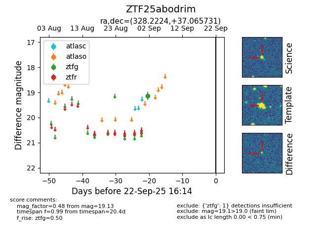

FINK: ZTF25abodrim
Lasair: ZTF25abodrim
ALeRCE: ZTF25abodrim
ZTF25abodrim (ztf,fink)
equatorial (ra, dec) = (328.2224,+37.06573)
galactic (l, b) = (87.7510,-13.32623)

last ztfg=19.13
1 ztfg detections